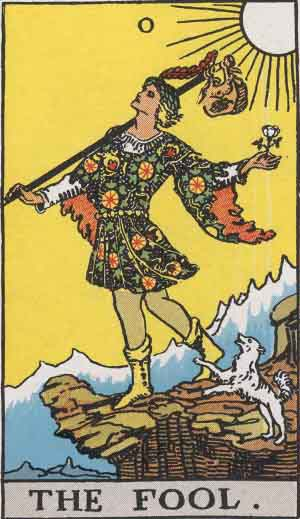

0 The Fool
With light step, as if earth and its trammels had little power to restrain him, a young man in gorgeous vestments pauses at the brink of a precipice among the great heights of the world; he surveys the blue distance before him-its expanse of sky rather than the prospect below. His act of eager walking is still indicated, though he is stationary at the given moment; his dog is still bounding. The edge which opens on the depth has no terror; it is as if angels were waiting to uphold him, if it came about that he leaped from the height. His countenance is full of intelligence and expectant dream. He has a rose in one hand and in the other a costly wand, from which depends over his right shoulder a wallet curiously embroidered. He is a prince of the other world on his travels through this one-all amidst the morning glory, in the keen air. The sun, which shines behind him, knows whence he came, whither he is going, and how he will return by another path after many days. He is the spirit in search of experience. Many symbols of the Instituted Mysteries are summarized in this card, which reverses, under high warrants, all the confusions that have preceded it.
In his Manual of Cartomancy, Grand Orient has a curious suggestion of the office of Mystic Fool, as apart of his process in higher divination; but it might call for more than ordinary gifts to put it into operation. We shall see how the card fares according to the common arts of fortune-telling, and it will be an example, to those who can discern, of the fact, otherwise so evident, that the Trumps Major had no place originally in the arts of psychic gambling, when cards are used as the counters and pretexts. Of the circumstances under which this art arose we know, however, very little. The conventional explanations say that the Fool signifies the flesh, the sensitive life, and by a peculiar satire its subsidiary name was at one time the alchemist, as depicting folly at the most insensate stage.
The Fool isn't part of the overall narrative per se. This card represents the journey itself, the foolishness that others perceive in anyone who tries to move beyond the mundane, day-to-day of life. This is similar to Mark 6:4 "And Jesus said to them, 'A prophet is not without honor, except in his hometown and among his relatives and in his own household.'" Essentially, people who know you will be uncomfortable with any attempt to move beyond the socially prescribed status-quo.
Waite takes a shot at fortune-telling here. He believes the Tarot deck should be used for self examination, not "psychic gambling".